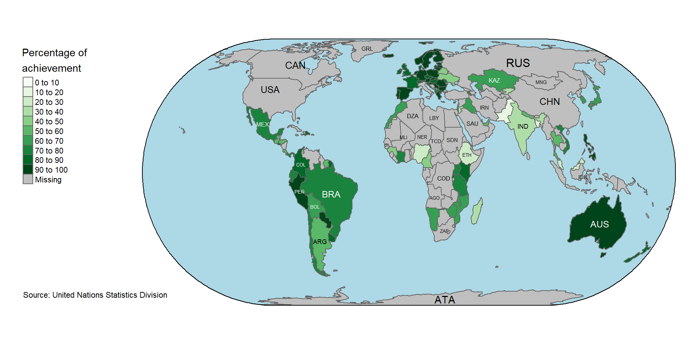
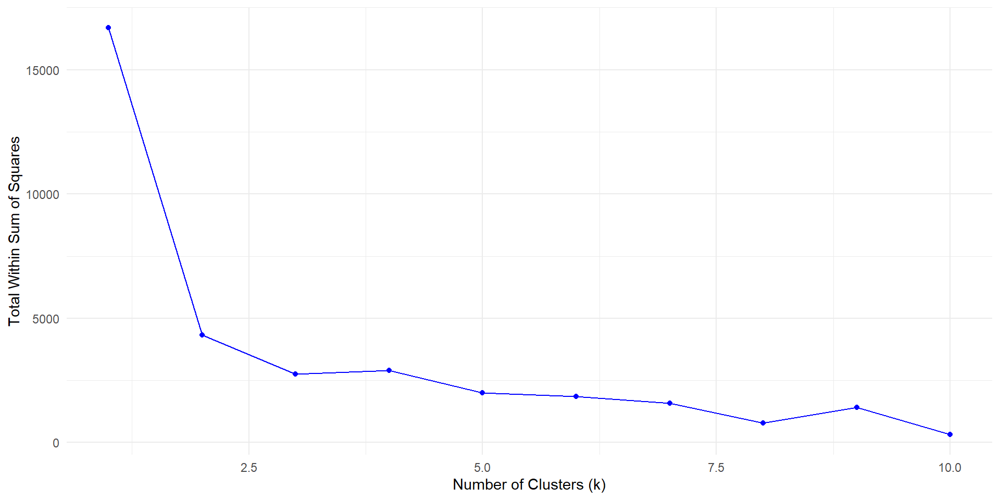

CSC3007-Team-Black-2
Relationship between nation’s legal framework achievements in gender equality and woman’s success in the economy.
Purpose of This Presentation
Research Questions
To what extent does a nation’s legal framework on gender equality affect economic growth for women?
Specifically, what is the relationship between a nation’s legal framework achievements in gender equality and woman’s success in the economy?
Can GDP, Happy Planet Index Score and Continent serve as predictors for a nation’s legal framework achievements in gender equality & proportion of women in managerial positions?
Importance of This Research
- Economic empowerment:
The economic empowerment of women has broader implications for overall economic development.
- Policy formulation:
Inform policymakers and lawmakers about the effectiveness and relevance of legal frameworks in fostering economic growth for women.
Importance of This Research
- Gender equality:
The impact of these legal frameworks is crucial in advancing gender equality efforts.
- Societal impact:
Sheds light on the potential benefits and consequences of legal frameworks on economic growth, impacting woman’s lives and opportunities.
UN Sustainable Development Goals
Women participation in the economy is related to Goals 5 and 8.
Selected Indicators
Indicator 5.1.1: Legal frameworks that promote, enforce and monitor gender equality (percentage of achievement 0 - 100) -- Area 3: employment and economic benefits
Indicator 5.5.2: Proportion of women in managerial positions
Indicator 8.5.1: Average hourly earnings of employees by sex, age, occupation and persons with disabilities
Indicator 8.5.2: Unemployment rate by sex, age and persons with disabilities
Map of Percentage of Achievement in Gender Equality Legal Frameworks
Map of Proportion of Women in Managerial Positions

Anticipation of the effect of Legal Gender Equality Frameworks on Women in Managerial Positions
We anticipate that the higher the nation’s legal framework achievements in gender equality will result in a higher percentage of women holding managerial positions.
- Because the chance of gender-based discrimination should be reduced as a result of the legal frameworks in place, this should result in better opportunities for women to hold managerial positions.
Effect of Legal Gender Equality Frameworks on Women in Managerial Positions
There seem to be a moderate correlation between the percentage of achievement in legal employment and benefit frameworks for females, and the percentage of woman in managerial position. The data distribution for the percentage of achievement in legal employment is left skewed and percentage of woman in managerial position is normally distributed.
Effect of Legal Gender Equality Frameworks on Women in Managerial Positions Re-expressed
The percentage of achievement in legal employment is re-expressed by taking the squared root of the skewed values. This helps to reduce the impact of extreme values and make the distribution more symmetrical. This resulted in an insignificant correlation value increase by 0.032

Map of Average Hourly Earning by Women
Daily USD exchange rate as at end of day 2023-07-19 GMT 
Map of Unemployment Rate of Women

Anticipation of effects of unemployment rates on hourly earnings for women
We anticipate that countries with lower unemployment rates for women should have higher average hourly earnings for women.
- Because countries with lower unemployment rates have a better economic environment which should result in higher average income for their citizens
EFFECTS OF UNEMPLOYMENT RATES ON HOURLY EARNINGS FOR WOMEN
A correlation of -0.097 indicates a weak negative relationship between unemployment rate for women and average hourly earning (USD) for women. Both data distribution are left skewed.

EFFECTS OF UNEMPLOYMENT RATES ON HOURLY EARNINGS FOR WOMEN re-expressed
The average hourly earnings for women is re-expressed by taking the squared root of the skewed values while the unemployed rates is re-expressed by taking log10 of the skewed values. This helps to reduce the impact of extreme values and make the distribution more symmetrical. This resulted in an insignificant correlation value increase by 0.103, with a correlation that is very close to zero, indicating that there is virtually no relationship between them.

Table of Women Economical Success
Anticipation of what Extensive Gender Equality Frameworks does to Female Unemployment
We anticipate that having a higher the nation’s legal framework achievements in gender equality would result in lower unemployment rate for women.
- Because by decreasing gender discrimination for women, more companies would be willing to employ women.
Gender Equality Frameworks vs Female Unemployment
There doesn’t seem to be any significant correlation between the percentage of legal employment and benefit frameworks for females, and the unemployment rate of females. However, this might be due to skewed distributions, hence we will re-express this data.
Gender Equality Frameworks vs Female Unemployment Re-Expressed
After Box Cox and logarithmic transformations, correlation coefficient seems to have improved positively. However, it still appears to be insignificant.
Anticipation of women in managerial positions on women average hourly earnings
We anticipate that having more women in managerial positions will increase the average hourly earning for female employees.
- Because in general, employees in a managerial position would receive higher income and with more women holding managerial positions, the average hourly earning for female employees will increase.
women in managerial positions vs women average hourly earnings
There seems to be a negative correlation between the percentage of female hourly earnings and women in managerial positions. However, this might be due to skewed distributions of female hourly earnings, hence we will re-express this data using logarithmic transformations .
women in managerial positions vs women average hourly earnings re-expressed
There still seems to be a negative correlation between the percentage of female hourly earnings and women in managerial positions after logarithmic transformations .
Comparsion of the four indicators
K-Means Clustering
Pairs Plot Highlighting Clusters
Decision Tree
Can the cluster assignment be predicted based on the country’s GDP, Happy Planet Index Score and Continent?

Evaluation of Decision Tree
Ten-fold cross validation indicates that the decision tree has a low accuracy of 0.825
The relative importance of the predictors for classification are as follows:
- HPI: 1
- Continent: 0.6767099
- GDP size: 0.4840805
Summary of Quantitative Results
- Moderate correlation between same-goal indicators.
- Moderate correlation between legal employment and benefit frameworks for females and the representation of women in managerial positions.
- Little correlations of statistical significance are observed between indicators for different goals.
- Potentially influenced by the country’s originally high unemployment rates across all genders.
- Missing data for significant countries such as Russia and China.
Policy Implications
# See project-sample slide 24
# Last item, require above to be done
/Users/yxchia/Documents/Github & Codes/csc3007-black2/csc3007-black2/csc3007-black2.qmd:56:51: style: [trailing_whitespace_linter] Trailing whitespace is superfluous.
# equality (percentage of achievement 0 - 100) \--
^
/Users/yxchia/Documents/Github & Codes/csc3007-black2/csc3007-black2/csc3007-black2.qmd:60:81: style: [line_length_linter] Lines should not be more than 80 characters.
"data/Indicator_5.1.1%3A_Legal_frameworks_that_promote__enforce_and_monitor_gender_equality_(percentage_of_achievement__0_-_100)_--_Area_3%3A_employment_and_economic_benefits.csv",
~~~~~~~~~~~~~~~~~~~~~~~~~~~~~~~~~~~~~~~~~~~~~~~~~~~~~~~~~~~~~~~~~~~~~~~~~~~~~~~~^~~~~~~~~~~~~~~~~~~~~~~~~~~~~~~~~~~~~~~~~~~~~~~~~~~~~~~~~~~~~~~~~~~~~~~~~~~~~~~~~~~~~~~~~~~~~~~~~~~~~~~~
/Users/yxchia/Documents/Github & Codes/csc3007-black2/csc3007-black2/csc3007-black2.qmd:67:81: style: [line_length_linter] Lines should not be more than 80 characters.
"data/Indicator_5.5.2%3A_Proportion_of_women_in_managerial_positions_(percent).csv",
~~~~~~~~~~~~~~~~~~~~~~~~~~~~~~~~~~~~~~~~~~~~~~~~~~~~~~~~~~~~~~~~~~~~~~~~~~~~~~~~^~~~~~~~
/Users/yxchia/Documents/Github & Codes/csc3007-black2/csc3007-black2/csc3007-black2.qmd:71:81: style: [line_length_linter] Lines should not be more than 80 characters.
# Load 8.5.1 data - Average hourly earnings of employees by sex, age, occupation and persons with disabilities
~~~~~~~~~~~~~~~~~~~~~~~~~~~~~~~~~~~~~~~~~~~~~~~~~~~~~~~~~~~~~~~~~~~~~~~~~~~~~~~~^~~~~~~~~~~~~~~~~~~~~~~~~~~~~~
/Users/yxchia/Documents/Github & Codes/csc3007-black2/csc3007-black2/csc3007-black2.qmd:74:81: style: [line_length_linter] Lines should not be more than 80 characters.
"data/Indicator_8.5.1%3A_Average_hourly_earnings_of_employees_by_sex_and_occupation_(local_currency).csv",
~~~~~~~~~~~~~~~~~~~~~~~~~~~~~~~~~~~~~~~~~~~~~~~~~~~~~~~~~~~~~~~~~~~~~~~~~~~~~~~~^~~~~~~~~~~~~~~~~~~~~~~~~~~~~~
/Users/yxchia/Documents/Github & Codes/csc3007-black2/csc3007-black2/csc3007-black2.qmd:81:81: style: [line_length_linter] Lines should not be more than 80 characters.
"data/Indicator_8.5.2%3A_Unemployment_rate__by_sex_and_disability_(percent).csv",
~~~~~~~~~~~~~~~~~~~~~~~~~~~~~~~~~~~~~~~~~~~~~~~~~~~~~~~~~~~~~~~~~~~~~~~~~~~~~~~~^~~~~
/Users/yxchia/Documents/Github & Codes/csc3007-black2/csc3007-black2/csc3007-black2.qmd:140:1: style: [object_name_linter] Variable and function name style should be snake_case or symbols.
World <- select(World, ISO3 = "iso_a3", geometry = "geometry")
^~~~~
/Users/yxchia/Documents/Github & Codes/csc3007-black2/csc3007-black2/csc3007-black2.qmd:410:27: style: [infix_spaces_linter] Put spaces around all infix operators.
scale_fill_manual(values=c(rep("burlywood3", nrow(merged_data))))
^
/Users/yxchia/Documents/Github & Codes/csc3007-black2/csc3007-black2/csc3007-black2.qmd:424:32: style: [trailing_whitespace_linter] Trailing whitespace is superfluous.
# getting exchange rate for USD
^
/Users/yxchia/Documents/Github & Codes/csc3007-black2/csc3007-black2/csc3007-black2.qmd:425:45: style: [trailing_whitespace_linter] Trailing whitespace is superfluous.
exchange_rate <- exchange_rate_latest("USD")
^~
/Users/yxchia/Documents/Github & Codes/csc3007-black2/csc3007-black2/csc3007-black2.qmd:427:26: style: [trailing_whitespace_linter] Trailing whitespace is superfluous.
# retrieving only Females
^
/Users/yxchia/Documents/Github & Codes/csc3007-black2/csc3007-black2/csc3007-black2.qmd:428:81: style: [line_length_linter] Lines should not be more than 80 characters.
indicator_8_5_1_average_hourly <- filter(indicator_8_5_1_average_hourly, sex_code == "F")
~~~~~~~~~~~~~~~~~~~~~~~~~~~~~~~~~~~~~~~~~~~~~~~~~~~~~~~~~~~~~~~~~~~~~~~~~~~~~~~~^~~~~~~~~~~
/Users/yxchia/Documents/Github & Codes/csc3007-black2/csc3007-black2/csc3007-black2.qmd:428:90: style: [trailing_whitespace_linter] Trailing whitespace is superfluous.
indicator_8_5_1_average_hourly <- filter(indicator_8_5_1_average_hourly, sex_code == "F")
^~
/Users/yxchia/Documents/Github & Codes/csc3007-black2/csc3007-black2/csc3007-black2.qmd:430:55: style: [trailing_whitespace_linter] Trailing whitespace is superfluous.
# get currency code and country code from country name
^
/Users/yxchia/Documents/Github & Codes/csc3007-black2/csc3007-black2/csc3007-black2.qmd:431:73: style: [trailing_whitespace_linter] Trailing whitespace is superfluous.
indicator_8_5_1_average_hourly <- mutate(indicator_8_5_1_average_hourly,
^~~
/Users/yxchia/Documents/Github & Codes/csc3007-black2/csc3007-black2/csc3007-black2.qmd:434:16: style: [single_quotes_linter] Only use double-quotes.
origin = 'iso3c',
^~~~~~~
/Users/yxchia/Documents/Github & Codes/csc3007-black2/csc3007-black2/csc3007-black2.qmd:435:21: style: [single_quotes_linter] Only use double-quotes.
destination = 'iso4217c',
^~~~~~~~~~
/Users/yxchia/Documents/Github & Codes/csc3007-black2/csc3007-black2/csc3007-black2.qmd:436:21: style: [trailing_whitespace_linter] Trailing whitespace is superfluous.
warn = FALSE))
^~
/Users/yxchia/Documents/Github & Codes/csc3007-black2/csc3007-black2/csc3007-black2.qmd:438:19: style: [trailing_whitespace_linter] Trailing whitespace is superfluous.
# get value in USD
^
/Users/yxchia/Documents/Github & Codes/csc3007-black2/csc3007-black2/csc3007-black2.qmd:439:81: style: [line_length_linter] Lines should not be more than 80 characters.
indicator_8_5_1_average_hourly$exchange_usd <- exchange_rate$one_usd_is_equivalent_to[match(indicator_8_5_1_average_hourly$currency_code, exchange_rate$currency)]
~~~~~~~~~~~~~~~~~~~~~~~~~~~~~~~~~~~~~~~~~~~~~~~~~~~~~~~~~~~~~~~~~~~~~~~~~~~~~~~~^~~~~~~~~~~~~~~~~~~~~~~~~~~~~~~~~~~~~~~~~~~~~~~~~~~~~~~~~~~~~~~~~~~~~~~~~~~~~~~~~~~
/Users/yxchia/Documents/Github & Codes/csc3007-black2/csc3007-black2/csc3007-black2.qmd:439:163: style: [trailing_whitespace_linter] Trailing whitespace is superfluous.
indicator_8_5_1_average_hourly$exchange_usd <- exchange_rate$one_usd_is_equivalent_to[match(indicator_8_5_1_average_hourly$currency_code, exchange_rate$currency)]
^
/Users/yxchia/Documents/Github & Codes/csc3007-black2/csc3007-black2/csc3007-black2.qmd:441:81: style: [line_length_linter] Lines should not be more than 80 characters.
indicator_8_5_1_average_hourly$amount_usd <- indicator_8_5_1_average_hourly$latest_value / indicator_8_5_1_average_hourly$exchange_usd
~~~~~~~~~~~~~~~~~~~~~~~~~~~~~~~~~~~~~~~~~~~~~~~~~~~~~~~~~~~~~~~~~~~~~~~~~~~~~~~~^~~~~~~~~~~~~~~~~~~~~~~~~~~~~~~~~~~~~~~~~~~~~~~~~~~~~~~~~
/Users/yxchia/Documents/Github & Codes/csc3007-black2/csc3007-black2/csc3007-black2.qmd:441:135: style: [trailing_whitespace_linter] Trailing whitespace is superfluous.
indicator_8_5_1_average_hourly$amount_usd <- indicator_8_5_1_average_hourly$latest_value / indicator_8_5_1_average_hourly$exchange_usd
^~~
/Users/yxchia/Documents/Github & Codes/csc3007-black2/csc3007-black2/csc3007-black2.qmd:443:21: style: [trailing_whitespace_linter] Trailing whitespace is superfluous.
# max USD = 64.19665
^
/Users/yxchia/Documents/Github & Codes/csc3007-black2/csc3007-black2/csc3007-black2.qmd:444:16: style: [trailing_whitespace_linter] Trailing whitespace is superfluous.
# min value = 0
^
/Users/yxchia/Documents/Github & Codes/csc3007-black2/csc3007-black2/csc3007-black2.qmd:445:3: style: [commented_code_linter] Commented code should be removed.
# max(indicator_8_5_1_average_hourly$amount_usd, na.rm = T)
^~~~~~~~~~~~~~~~~~~~~~~~~~~~~~~~~~~~~~~~~~~~~~~~~~~~~~~~~~
/Users/yxchia/Documents/Github & Codes/csc3007-black2/csc3007-black2/csc3007-black2.qmd:445:60: style: [trailing_whitespace_linter] Trailing whitespace is superfluous.
# max(indicator_8_5_1_average_hourly$amount_usd, na.rm = T)
^
/Users/yxchia/Documents/Github & Codes/csc3007-black2/csc3007-black2/csc3007-black2.qmd:446:3: style: [commented_code_linter] Commented code should be removed.
# min(indicator_8_5_1_average_hourly$amount_usd, na.rm = T)
^~~~~~~~~~~~~~~~~~~~~~~~~~~~~~~~~~~~~~~~~~~~~~~~~~~~~~~~~~~
/Users/yxchia/Documents/Github & Codes/csc3007-black2/csc3007-black2/csc3007-black2.qmd:446:60: style: [trailing_whitespace_linter] Trailing whitespace is superfluous.
# min(indicator_8_5_1_average_hourly$amount_usd, na.rm = T)
^~
/Users/yxchia/Documents/Github & Codes/csc3007-black2/csc3007-black2/csc3007-black2.qmd:448:18: style: [trailing_whitespace_linter] Trailing whitespace is superfluous.
# graph from 1-65
^
/Users/yxchia/Documents/Github & Codes/csc3007-black2/csc3007-black2/csc3007-black2.qmd:449:12: style: [trailing_whitespace_linter] Trailing whitespace is superfluous.
cmap_851 <-
^~~
/Users/yxchia/Documents/Github & Codes/csc3007-black2/csc3007-black2/csc3007-black2.qmd:450:69: style: [trailing_whitespace_linter] Trailing whitespace is superfluous.
World |> left_join(indicator_8_5_1_average_hourly, by = c("ISO3"))
^~
/Users/yxchia/Documents/Github & Codes/csc3007-black2/csc3007-black2/csc3007-black2.qmd:452:29: style: [trailing_whitespace_linter] Trailing whitespace is superfluous.
cmap_851 <- mutate(cmap_851,
^
/Users/yxchia/Documents/Github & Codes/csc3007-black2/csc3007-black2/csc3007-black2.qmd:455:20: style: [commas_linter] Commas should always have a space after.
breaks = c(0,1,2,3,5,8,13,21,34,55,
^
/Users/yxchia/Documents/Github & Codes/csc3007-black2/csc3007-black2/csc3007-black2.qmd:455:22: style: [commas_linter] Commas should always have a space after.
breaks = c(0,1,2,3,5,8,13,21,34,55,
^
/Users/yxchia/Documents/Github & Codes/csc3007-black2/csc3007-black2/csc3007-black2.qmd:455:24: style: [commas_linter] Commas should always have a space after.
breaks = c(0,1,2,3,5,8,13,21,34,55,
^
/Users/yxchia/Documents/Github & Codes/csc3007-black2/csc3007-black2/csc3007-black2.qmd:455:26: style: [commas_linter] Commas should always have a space after.
breaks = c(0,1,2,3,5,8,13,21,34,55,
^
/Users/yxchia/Documents/Github & Codes/csc3007-black2/csc3007-black2/csc3007-black2.qmd:455:28: style: [commas_linter] Commas should always have a space after.
breaks = c(0,1,2,3,5,8,13,21,34,55,
^
/Users/yxchia/Documents/Github & Codes/csc3007-black2/csc3007-black2/csc3007-black2.qmd:455:30: style: [commas_linter] Commas should always have a space after.
breaks = c(0,1,2,3,5,8,13,21,34,55,
^
/Users/yxchia/Documents/Github & Codes/csc3007-black2/csc3007-black2/csc3007-black2.qmd:455:33: style: [commas_linter] Commas should always have a space after.
breaks = c(0,1,2,3,5,8,13,21,34,55,
^
/Users/yxchia/Documents/Github & Codes/csc3007-black2/csc3007-black2/csc3007-black2.qmd:455:36: style: [commas_linter] Commas should always have a space after.
breaks = c(0,1,2,3,5,8,13,21,34,55,
^
/Users/yxchia/Documents/Github & Codes/csc3007-black2/csc3007-black2/csc3007-black2.qmd:455:39: style: [commas_linter] Commas should always have a space after.
breaks = c(0,1,2,3,5,8,13,21,34,55,
^
/Users/yxchia/Documents/Github & Codes/csc3007-black2/csc3007-black2/csc3007-black2.qmd:456:42: style: [trailing_whitespace_linter] Trailing whitespace is superfluous.
max(amount_usd, na.rm = TRUE)),
^
/Users/yxchia/Documents/Github & Codes/csc3007-black2/csc3007-black2/csc3007-black2.qmd:462:18: style: [trailing_whitespace_linter] Trailing whitespace is superfluous.
"5 to 8",
^
/Users/yxchia/Documents/Github & Codes/csc3007-black2/csc3007-black2/csc3007-black2.qmd:467:23: style: [trailing_whitespace_linter] Trailing whitespace is superfluous.
"55 and above"
^
/Users/yxchia/Documents/Github & Codes/csc3007-black2/csc3007-black2/csc3007-black2.qmd:469:9: style: [trailing_whitespace_linter] Trailing whitespace is superfluous.
))
^~~
/Users/yxchia/Documents/Github & Codes/csc3007-black2/csc3007-black2/csc3007-black2.qmd:471:22: style: [trailing_whitespace_linter] Trailing whitespace is superfluous.
tm_poa_after_shape <-
^
/Users/yxchia/Documents/Github & Codes/csc3007-black2/csc3007-black2/csc3007-black2.qmd:474:35: style: [trailing_whitespace_linter] Trailing whitespace is superfluous.
title = "Earnings in USD") +
^
/Users/yxchia/Documents/Github & Codes/csc3007-black2/csc3007-black2/csc3007-black2.qmd:477:48: style: [trailing_whitespace_linter] Trailing whitespace is superfluous.
inner.margins = c(0.01, 0.2, 0.01, 0.01),
^
/Users/yxchia/Documents/Github & Codes/csc3007-black2/csc3007-black2/csc3007-black2.qmd:478:30: style: [trailing_whitespace_linter] Trailing whitespace is superfluous.
bg.color = "lightblue",
^
/Users/yxchia/Documents/Github & Codes/csc3007-black2/csc3007-black2/csc3007-black2.qmd:481:20: style: [trailing_whitespace_linter] Trailing whitespace is superfluous.
frame = FALSE
^~~
/Users/yxchia/Documents/Github & Codes/csc3007-black2/csc3007-black2/csc3007-black2.qmd:482:8: style: [trailing_whitespace_linter] Trailing whitespace is superfluous.
) +
^
/Users/yxchia/Documents/Github & Codes/csc3007-black2/csc3007-black2/csc3007-black2.qmd:483:35: style: [trailing_whitespace_linter] Trailing whitespace is superfluous.
tm_text("ISO3", size = "AREA") +
^~~
/Users/yxchia/Documents/Github & Codes/csc3007-black2/csc3007-black2/csc3007-black2.qmd:485:38: style: [trailing_whitespace_linter] Trailing whitespace is superfluous.
position = c("left", "bottom"))
^~
/Users/yxchia/Documents/Github & Codes/csc3007-black2/csc3007-black2/csc3007-black2.qmd:487:58: style: [trailing_whitespace_linter] Trailing whitespace is superfluous.
tm_poa <- tm_shape(cmap_851, projection = "ESRI:54012") +
^
/Users/yxchia/Documents/Github & Codes/csc3007-black2/csc3007-black2/csc3007-black2.qmd:488:21: style: [trailing_whitespace_linter] Trailing whitespace is superfluous.
tm_poa_after_shape
^~
/Users/yxchia/Documents/Github & Codes/csc3007-black2/csc3007-black2/csc3007-black2.qmd:498:26: style: [trailing_whitespace_linter] Trailing whitespace is superfluous.
# retrieving only Females
^
/Users/yxchia/Documents/Github & Codes/csc3007-black2/csc3007-black2/csc3007-black2.qmd:499:81: style: [line_length_linter] Lines should not be more than 80 characters.
indicator_8_5_2_unemployment <- filter(indicator_8_5_2_unemployment, sex_code == "F")
~~~~~~~~~~~~~~~~~~~~~~~~~~~~~~~~~~~~~~~~~~~~~~~~~~~~~~~~~~~~~~~~~~~~~~~~~~~~~~~~^~~~~~
/Users/yxchia/Documents/Github & Codes/csc3007-black2/csc3007-black2/csc3007-black2.qmd:499:86: style: [trailing_whitespace_linter] Trailing whitespace is superfluous.
indicator_8_5_2_unemployment <- filter(indicator_8_5_2_unemployment, sex_code == "F")
^
/Users/yxchia/Documents/Github & Codes/csc3007-black2/csc3007-black2/csc3007-black2.qmd:501:3: style: [commented_code_linter] Commented code should be removed.
# nrow(indicator_8_5_2_unemployment)
^~~~~~~~~~~~~~~~~~~~~~~~~~~~~~~~~~
/Users/yxchia/Documents/Github & Codes/csc3007-black2/csc3007-black2/csc3007-black2.qmd:502:3: style: [commented_code_linter] Commented code should be removed.
# count <- sum(!is.na(indicator_8_5_2_unemployment$latest_value) & indicator_8_5_2_unemployment$latest_value >= 40 & indicator_8_5_2_unemployment$latest_value <= 50)
^~~~~~~~~~~~~~~~~~~~~~~~~~~~~~~~~~~~~~~~~~~~~~~~~~~~~~~~~~~~~~~~~~~~~~~~~~~~~~~~~~~~~~~~~~~~~~~~~~~~~~~~~~~~~~~~~~~~~~~~~~~~~~~~~~~~~~~~~~~~~~~~~~~~~~~~~~~~~~~~~~~
/Users/yxchia/Documents/Github & Codes/csc3007-black2/csc3007-black2/csc3007-black2.qmd:502:81: style: [line_length_linter] Lines should not be more than 80 characters.
# count <- sum(!is.na(indicator_8_5_2_unemployment$latest_value) & indicator_8_5_2_unemployment$latest_value >= 40 & indicator_8_5_2_unemployment$latest_value <= 50)
~~~~~~~~~~~~~~~~~~~~~~~~~~~~~~~~~~~~~~~~~~~~~~~~~~~~~~~~~~~~~~~~~~~~~~~~~~~~~~~~^~~~~~~~~~~~~~~~~~~~~~~~~~~~~~~~~~~~~~~~~~~~~~~~~~~~~~~~~~~~~~~~~~~~~~~~~~~~~~~~~~~~~
/Users/yxchia/Documents/Github & Codes/csc3007-black2/csc3007-black2/csc3007-black2.qmd:507:3: style: [commented_code_linter] Commented code should be removed.
# max(indicator_8_5_2_unemployment$latest_value, na.rm = T)
^~~~~~~~~~~~~~~~~~~~~~~~~~~~~~~~~~~~~~~~~~~~~~~~~~~~~~~~~~
/Users/yxchia/Documents/Github & Codes/csc3007-black2/csc3007-black2/csc3007-black2.qmd:507:60: style: [trailing_whitespace_linter] Trailing whitespace is superfluous.
# max(indicator_8_5_2_unemployment$latest_value, na.rm = T)
^
/Users/yxchia/Documents/Github & Codes/csc3007-black2/csc3007-black2/csc3007-black2.qmd:508:3: style: [commented_code_linter] Commented code should be removed.
# min(indicator_8_5_2_unemployment$latest_value, na.rm = T)
^~~~~~~~~~~~~~~~~~~~~~~~~~~~~~~~~~~~~~~~~~~~~~~~~~~~~~~~~~
/Users/yxchia/Documents/Github & Codes/csc3007-black2/csc3007-black2/csc3007-black2.qmd:508:60: style: [trailing_whitespace_linter] Trailing whitespace is superfluous.
# min(indicator_8_5_2_unemployment$latest_value, na.rm = T)
^
/Users/yxchia/Documents/Github & Codes/csc3007-black2/csc3007-black2/csc3007-black2.qmd:510:12: style: [trailing_whitespace_linter] Trailing whitespace is superfluous.
cmap_852 <-
^~~
/Users/yxchia/Documents/Github & Codes/csc3007-black2/csc3007-black2/csc3007-black2.qmd:511:67: style: [trailing_whitespace_linter] Trailing whitespace is superfluous.
World |> left_join(indicator_8_5_2_unemployment, by = c("ISO3"))
^~
/Users/yxchia/Documents/Github & Codes/csc3007-black2/csc3007-black2/csc3007-black2.qmd:590:20: style: [single_quotes_linter] Only use double-quotes.
by = c('ISO3', 'Country'),
^~~~~~
/Users/yxchia/Documents/Github & Codes/csc3007-black2/csc3007-black2/csc3007-black2.qmd:590:28: style: [single_quotes_linter] Only use double-quotes.
by = c('ISO3', 'Country'),
^~~~~~~~~
/Users/yxchia/Documents/Github & Codes/csc3007-black2/csc3007-black2/csc3007-black2.qmd:610:27: style: [infix_spaces_linter] Put spaces around all infix operators.
scale_fill_manual(values=c(rep("burlywood3", nrow(merged_data))))
^
/Users/yxchia/Documents/Github & Codes/csc3007-black2/csc3007-black2/csc3007-black2.qmd:626:81: style: [line_length_linter] Lines should not be more than 80 characters.
# Correlation Graph. See Sample-Project slide 11,12,15 *Please Judge if is approriate. Goal is to see if there is any significant statitical correlation
~~~~~~~~~~~~~~~~~~~~~~~~~~~~~~~~~~~~~~~~~~~~~~~~~~~~~~~~~~~~~~~~~~~~~~~~~~~~~~~~^~~~~~~~~~~~~~~~~~~~~~~~~~~~~~~~~~~~~~~~~~~~~~~~~~~~~~~~~~~~~~~~~~~~~~~~~
/Users/yxchia/Documents/Github & Codes/csc3007-black2/csc3007-black2/csc3007-black2.qmd:626:153: style: [trailing_whitespace_linter] Trailing whitespace is superfluous.
# Correlation Graph. See Sample-Project slide 11,12,15 *Please Judge if is approriate. Goal is to see if there is any significant statitical correlation
^
/Users/yxchia/Documents/Github & Codes/csc3007-black2/csc3007-black2/csc3007-black2.qmd:632:42: style: [trailing_whitespace_linter] Trailing whitespace is superfluous.
"log10 % Female that is Unemployed" =
^
/Users/yxchia/Documents/Github & Codes/csc3007-black2/csc3007-black2/csc3007-black2.qmd:657:4: style: [trailing_whitespace_linter] Trailing whitespace is superfluous.
) +
^
/Users/yxchia/Documents/Github & Codes/csc3007-black2/csc3007-black2/csc3007-black2.qmd:658:27: style: [infix_spaces_linter] Put spaces around all infix operators.
scale_fill_manual(values=c(rep("burlywood3", nrow(merged_data))))
^
/Users/yxchia/Documents/Github & Codes/csc3007-black2/csc3007-black2/csc3007-black2.qmd:744:55: style: [trailing_whitespace_linter] Trailing whitespace is superfluous.
# Correlation Graph. See Sample-Project slide 11,12,15
^
/Users/yxchia/Documents/Github & Codes/csc3007-black2/csc3007-black2/csc3007-black2.qmd:781:5: style: [commented_code_linter] Commented code should be removed.
# title = "Gender Equality Frameworks and Female Unemployment rate",
^~~~~~~~~~~~~~~~~~~~~~~~~~~~~~~~~~~~~~~~~~~~~~~~~~~~~~~~~~~~~~~~~~
/Users/yxchia/Documents/Github & Codes/csc3007-black2/csc3007-black2/csc3007-black2.qmd:799:57: style: [commas_linter] Commas should always have a space after.
plot.background = element_rect(fill = "transparent",colour = NA)
^
/Users/yxchia/Documents/Github & Codes/csc3007-black2/csc3007-black2/csc3007-black2.qmd:826:3: style: [commented_code_linter] Commented code should be removed.
# x <- merged_data$`% Gender Equality Frameworks`
^~~~~~~~~~~~~~~~~~~~~~~~~~~~~~~~~~~~~~~~~~~~~~~
/Users/yxchia/Documents/Github & Codes/csc3007-black2/csc3007-black2/csc3007-black2.qmd:827:3: style: [commented_code_linter] Commented code should be removed.
# b <- MASS::boxcox(x ~ 1, plotit = FALSE, )
^~~~~~~~~~~~~~~~~~~~~~~~~~~~~~~~~~~~~~~~~~
/Users/yxchia/Documents/Github & Codes/csc3007-black2/csc3007-black2/csc3007-black2.qmd:828:3: style: [commented_code_linter] Commented code should be removed.
# lambda <- b$x[which.max(b$y)] # -0.02
^~~~~~~~~~~~~~~~~~~~~~~~~~~~~~~~~~~~~
/Users/yxchia/Documents/Github & Codes/csc3007-black2/csc3007-black2/csc3007-black2.qmd:830:3: style: [commented_code_linter] Commented code should be removed.
# new_x_exact <- (x ^ lambda - 1) / lambda
^~~~~~~~~~~~~~~~~~~~~~~~~~~~~~~~~~~~~~~~
/Users/yxchia/Documents/Github & Codes/csc3007-black2/csc3007-black2/csc3007-black2.qmd:831:3: style: [commented_code_linter] Commented code should be removed.
# new_x <- log(x)
^~~~~~~~~~~~~~~
/Users/yxchia/Documents/Github & Codes/csc3007-black2/csc3007-black2/csc3007-black2.qmd:833:5: style: [commented_code_linter] Commented code should be removed.
# mutate("Box-Cox % Gender Equality Frameworks" = new_x)
^~~~~~~~~~~~~~~~~~~~~~~~~~~~~~~~~~~~~~~~~~~~~~~~~~~~~~
/Users/yxchia/Documents/Github & Codes/csc3007-black2/csc3007-black2/csc3007-black2.qmd:839:5: style: [commented_code_linter] Commented code should be removed.
# title = "Employment Legal Frameworks and Female Unemployment rate",
^~~~~~~~~~~~~~~~~~~~~~~~~~~~~~~~~~~~~~~~~~~~~~~~~~~~~~~~~~~~~~~~~~~
/Users/yxchia/Documents/Github & Codes/csc3007-black2/csc3007-black2/csc3007-black2.qmd:859:57: style: [commas_linter] Commas should always have a space after.
plot.background = element_rect(fill = "transparent",colour = NA)
^
/Users/yxchia/Documents/Github & Codes/csc3007-black2/csc3007-black2/csc3007-black2.qmd:913:5: style: [commented_code_linter] Commented code should be removed.
# title = "Relationship of women's Managerial Positions and Hourly Earnings",
^~~~~~~~~~~~~~~~~~~~~~~~~~~~~~~~~~~~~~~~~~~~~~~~~~~~~~~~~~~~~~~~~~~~~~~~~~~
/Users/yxchia/Documents/Github & Codes/csc3007-black2/csc3007-black2/csc3007-black2.qmd:915:56: style: [trailing_whitespace_linter] Trailing whitespace is superfluous.
columnLabels = c("% Women in \nManagerial Positions",
^
/Users/yxchia/Documents/Github & Codes/csc3007-black2/csc3007-black2/csc3007-black2.qmd:931:57: style: [commas_linter] Commas should always have a space after.
plot.background = element_rect(fill = "transparent",colour = NA)
^
/Users/yxchia/Documents/Github & Codes/csc3007-black2/csc3007-black2/csc3007-black2.qmd:961:5: style: [commented_code_linter] Commented code should be removed.
# title = "Relationship of women's Managerial Positions and Hourly Earnings",
^~~~~~~~~~~~~~~~~~~~~~~~~~~~~~~~~~~~~~~~~~~~~~~~~~~~~~~~~~~~~~~~~~~~~~~~~~~
/Users/yxchia/Documents/Github & Codes/csc3007-black2/csc3007-black2/csc3007-black2.qmd:966:56: style: [trailing_whitespace_linter] Trailing whitespace is superfluous.
columnLabels = c("% Women in \nManagerial Positions",
^
/Users/yxchia/Documents/Github & Codes/csc3007-black2/csc3007-black2/csc3007-black2.qmd:982:57: style: [commas_linter] Commas should always have a space after.
plot.background = element_rect(fill = "transparent",colour = NA)
^
/Users/yxchia/Documents/Github & Codes/csc3007-black2/csc3007-black2/csc3007-black2.qmd:1047:53: style: [trailing_whitespace_linter] Trailing whitespace is superfluous.
# Perform sqrt transformation and log transformation
^
/Users/yxchia/Documents/Github & Codes/csc3007-black2/csc3007-black2/csc3007-black2.qmd:1051:81: style: [line_length_linter] Lines should not be more than 80 characters.
mutate("sqrt(% Gender Equality Frameworks)" = sqrt(`% Gender Equality Frameworks`))
~~~~~~~~~~~~~~~~~~~~~~~~~~~~~~~~~~~~~~~~~~~~~~~~~~~~~~~~~~~~~~~~~~~~~~~~~~~~~~~~^~~~~
/Users/yxchia/Documents/Github & Codes/csc3007-black2/csc3007-black2/csc3007-black2.qmd:1086:57: style: [commas_linter] Commas should always have a space after.
plot.background = element_rect(fill = "transparent",colour = NA)
^
/Users/yxchia/Documents/Github & Codes/csc3007-black2/csc3007-black2/csc3007-black2.qmd:1098:25: style: [trailing_whitespace_linter] Trailing whitespace is superfluous.
# VARADHARAJAN JAYAPRIYA
^
/Users/yxchia/Documents/Github & Codes/csc3007-black2/csc3007-black2/csc3007-black2.qmd:1099:51: style: [trailing_whitespace_linter] Trailing whitespace is superfluous.
# merge data using left join, and drop all NA rows
^
/Users/yxchia/Documents/Github & Codes/csc3007-black2/csc3007-black2/csc3007-black2.qmd:1101:34: style: [trailing_whitespace_linter] Trailing whitespace is superfluous.
merged_data <- formatted_8_5_2 |>
^~~
/Users/yxchia/Documents/Github & Codes/csc3007-black2/csc3007-black2/csc3007-black2.qmd:1102:29: style: [trailing_whitespace_linter] Trailing whitespace is superfluous.
left_join(formatted_5_1_1,
^
/Users/yxchia/Documents/Github & Codes/csc3007-black2/csc3007-black2/csc3007-black2.qmd:1103:42: style: [trailing_whitespace_linter] Trailing whitespace is superfluous.
by = c("ISO3", "Country")) |>
^~~
/Users/yxchia/Documents/Github & Codes/csc3007-black2/csc3007-black2/csc3007-black2.qmd:1104:29: style: [trailing_whitespace_linter] Trailing whitespace is superfluous.
left_join(formatted_5_5_2,
^
/Users/yxchia/Documents/Github & Codes/csc3007-black2/csc3007-black2/csc3007-black2.qmd:1105:42: style: [trailing_whitespace_linter] Trailing whitespace is superfluous.
by = c("ISO3", "Country")) |>
^~~
/Users/yxchia/Documents/Github & Codes/csc3007-black2/csc3007-black2/csc3007-black2.qmd:1106:29: style: [trailing_whitespace_linter] Trailing whitespace is superfluous.
left_join(formatted_8_5_1,
^
/Users/yxchia/Documents/Github & Codes/csc3007-black2/csc3007-black2/csc3007-black2.qmd:1109:81: style: [line_length_linter] Lines should not be more than 80 characters.
# Perform sqrt transformation for "% Female Hourly Earnings" and log transformation for "% Females Unemployed"
~~~~~~~~~~~~~~~~~~~~~~~~~~~~~~~~~~~~~~~~~~~~~~~~~~~~~~~~~~~~~~~~~~~~~~~~~~~~~~~~^~~~~~~~~~~~~~~~~~~~~~~~~~~~~~
/Users/yxchia/Documents/Github & Codes/csc3007-black2/csc3007-black2/csc3007-black2.qmd:1113:81: style: [line_length_linter] Lines should not be more than 80 characters.
mutate("sqrt(% Gender Equality Frameworks)" = sqrt(`% Gender Equality Frameworks`))
~~~~~~~~~~~~~~~~~~~~~~~~~~~~~~~~~~~~~~~~~~~~~~~~~~~~~~~~~~~~~~~~~~~~~~~~~~~~~~~~^~~~~
/Users/yxchia/Documents/Github & Codes/csc3007-black2/csc3007-black2/csc3007-black2.qmd:1115:27: style: [trailing_whitespace_linter] Trailing whitespace is superfluous.
# Drop rows with NA values
^
/Users/yxchia/Documents/Github & Codes/csc3007-black2/csc3007-black2/csc3007-black2.qmd:1116:44: style: [trailing_whitespace_linter] Trailing whitespace is superfluous.
normalised_data <- drop_na(normalised_data)
^
/Users/yxchia/Documents/Github & Codes/csc3007-black2/csc3007-black2/csc3007-black2.qmd:1118:81: style: [line_length_linter] Lines should not be more than 80 characters.
normalised_data_cols <- normalised_data[, c("sqrt(% Gender Equality Frameworks)", "log_10(% Females Unemployed)", "% Women in Managerial Positions", "sqrt(Female Hourly Earnings USD)")]
~~~~~~~~~~~~~~~~~~~~~~~~~~~~~~~~~~~~~~~~~~~~~~~~~~~~~~~~~~~~~~~~~~~~~~~~~~~~~~~~^~~~~~~~~~~~~~~~~~~~~~~~~~~~~~~~~~~~~~~~~~~~~~~~~~~~~~~~~~~~~~~~~~~~~~~~~~~~~~~~~~~~~~~~~~~~~~~~~~~~~~~~~~~
/Users/yxchia/Documents/Github & Codes/csc3007-black2/csc3007-black2/csc3007-black2.qmd:1118:186: style: [trailing_whitespace_linter] Trailing whitespace is superfluous.
normalised_data_cols <- normalised_data[, c("sqrt(% Gender Equality Frameworks)", "log_10(% Females Unemployed)", "% Women in Managerial Positions", "sqrt(Female Hourly Earnings USD)")]
^~
/Users/yxchia/Documents/Github & Codes/csc3007-black2/csc3007-black2/csc3007-black2.qmd:1145:1: style: [object_name_linter] Variable and function name style should be snake_case or symbols.
km.out <- kmeans(normalised_data_cols, centers = 2, nstart = 20)
^~~~~~
/Users/yxchia/Documents/Github & Codes/csc3007-black2/csc3007-black2/csc3007-black2.qmd:1152:81: style: [line_length_linter] Lines should not be more than 80 characters.
columns = c("sqrt(% Gender Equality Frameworks)", "log_10(% Females Unemployed)", "% Women in Managerial Positions", "sqrt(Female Hourly Earnings USD)"),
~~~~~~~~~~~~~~~~~~~~~~~~~~~~~~~~~~~~~~~~~~~~~~~~~~~~~~~~~~~~~~~~~~~~~~~~~~~~~~~~^~~~~~~~~~~~~~~~~~~~~~~~~~~~~~~~~~~~~~~~~~~~~~~~~~~~~~~~~~~~~~~~~~~~~~~~~~~~~~~~~
/Users/yxchia/Documents/Github & Codes/csc3007-black2/csc3007-black2/csc3007-black2.qmd:1157:81: style: [line_length_linter] Lines should not be more than 80 characters.
position = position_jitter(height = 1, width = 0.5),
~~~~~~~~~~~~~~~~~~~~~~~~~~~~~~~~~~~~~~~~~~~~~~~~~~~~~~~~~~~~~~~~~~~~~~~~~~~~~~~~^~~~~~~~~~~
/Users/yxchia/Documents/Github & Codes/csc3007-black2/csc3007-black2/csc3007-black2.qmd:1171:26: style: [trailing_whitespace_linter] Trailing whitespace is superfluous.
# Load Country Level Data
^
/Users/yxchia/Documents/Github & Codes/csc3007-black2/csc3007-black2/csc3007-black2.qmd:1173:21: style: [trailing_whitespace_linter] Trailing whitespace is superfluous.
# Step1: Import Data
^
/Users/yxchia/Documents/Github & Codes/csc3007-black2/csc3007-black2/csc3007-black2.qmd:1174:81: style: [line_length_linter] Lines should not be more than 80 characters.
happy_index <- read_excel("data/happy-planet-index-2006-2020-public-data-set.xlsx", sheet = 2, skip = 7)
~~~~~~~~~~~~~~~~~~~~~~~~~~~~~~~~~~~~~~~~~~~~~~~~~~~~~~~~~~~~~~~~~~~~~~~~~~~~~~~~^~~~~~~~~~~~~~~~~~~~~~~~
/Users/yxchia/Documents/Github & Codes/csc3007-black2/csc3007-black2/csc3007-black2.qmd:1215:25: warning: [seq_linter] 1:nrow(...) is likely to be wrong in the empty edge case. Use seq_len(nrow(...)) instead.
shuffle_index <- sample(1:nrow(merged_data))
^~~~~~~~~~~~~~~~~~~
/Users/yxchia/Documents/Github & Codes/csc3007-black2/csc3007-black2/csc3007-black2.qmd:1225:26: style: [infix_spaces_linter] Put spaces around all infix operators.
tree <- rpart(cluster_id ~., data = train_data, method="class", minsplit=5, minbucket=1)
^
/Users/yxchia/Documents/Github & Codes/csc3007-black2/csc3007-black2/csc3007-black2.qmd:1225:55: style: [infix_spaces_linter] Put spaces around all infix operators.
tree <- rpart(cluster_id ~., data = train_data, method="class", minsplit=5, minbucket=1)
^
/Users/yxchia/Documents/Github & Codes/csc3007-black2/csc3007-black2/csc3007-black2.qmd:1225:73: style: [infix_spaces_linter] Put spaces around all infix operators.
tree <- rpart(cluster_id ~., data = train_data, method="class", minsplit=5, minbucket=1)
^
/Users/yxchia/Documents/Github & Codes/csc3007-black2/csc3007-black2/csc3007-black2.qmd:1225:81: style: [line_length_linter] Lines should not be more than 80 characters.
tree <- rpart(cluster_id ~., data = train_data, method="class", minsplit=5, minbucket=1)
~~~~~~~~~~~~~~~~~~~~~~~~~~~~~~~~~~~~~~~~~~~~~~~~~~~~~~~~~~~~~~~~~~~~~~~~~~~~~~~~^~~~~~~~
/Users/yxchia/Documents/Github & Codes/csc3007-black2/csc3007-black2/csc3007-black2.qmd:1225:86: style: [infix_spaces_linter] Put spaces around all infix operators.
tree <- rpart(cluster_id ~., data = train_data, method="class", minsplit=5, minbucket=1)
^
/Users/yxchia/Documents/Github & Codes/csc3007-black2/csc3007-black2/csc3007-black2.qmd:1226:29: style: [infix_spaces_linter] Put spaces around all infix operators.
rpart.plot(tree, box.palette="GnRd")
^
/Users/yxchia/Documents/Github & Codes/csc3007-black2/csc3007-black2/csc3007-black2.qmd:1239:27: style: [infix_spaces_linter] Put spaces around all infix operators.
model <- train(cluster_id ~., data = merged_data, method = "rpart", trControl = ctrl, minsplit=5, minbucket=1)
^
/Users/yxchia/Documents/Github & Codes/csc3007-black2/csc3007-black2/csc3007-black2.qmd:1239:81: style: [line_length_linter] Lines should not be more than 80 characters.
model <- train(cluster_id ~., data = merged_data, method = "rpart", trControl = ctrl, minsplit=5, minbucket=1)
~~~~~~~~~~~~~~~~~~~~~~~~~~~~~~~~~~~~~~~~~~~~~~~~~~~~~~~~~~~~~~~~~~~~~~~~~~~~~~~~^~~~~~~~~~~~~~~~~~~~~~~~~~~~~~
/Users/yxchia/Documents/Github & Codes/csc3007-black2/csc3007-black2/csc3007-black2.qmd:1239:95: style: [infix_spaces_linter] Put spaces around all infix operators.
model <- train(cluster_id ~., data = merged_data, method = "rpart", trControl = ctrl, minsplit=5, minbucket=1)
^
/Users/yxchia/Documents/Github & Codes/csc3007-black2/csc3007-black2/csc3007-black2.qmd:1239:108: style: [infix_spaces_linter] Put spaces around all infix operators.
model <- train(cluster_id ~., data = merged_data, method = "rpart", trControl = ctrl, minsplit=5, minbucket=1)
^
/Users/yxchia/Documents/Github & Codes/csc3007-black2/csc3007-black2/csc3007-black2.qmd:1244:11: warning: [seq_linter] 1:length(...) is likely to be wrong in the empty edge case. Use seq_along(...) instead.
for (i in 1:length(tree$variable.importance)) {
^~~~~~~~~~~~~~~~~~~~~~~~~~~~~~~~~~
/Users/yxchia/Documents/Github & Codes/csc3007-black2/csc3007-black2/csc3007-black2.qmd:1245:81: style: [line_length_linter] Lines should not be more than 80 characters.
relative_importance[i] <- tree$variable.importance[i] / tree$variable.importance[1]
~~~~~~~~~~~~~~~~~~~~~~~~~~~~~~~~~~~~~~~~~~~~~~~~~~~~~~~~~~~~~~~~~~~~~~~~~~~~~~~~^~~~~CHIA YI XUAN, TSUI SAU CHI, JEANIE OH JUN NING, VARADHARAJAN JAYAPRIYA, GU JINMING, WONG JUN HAO